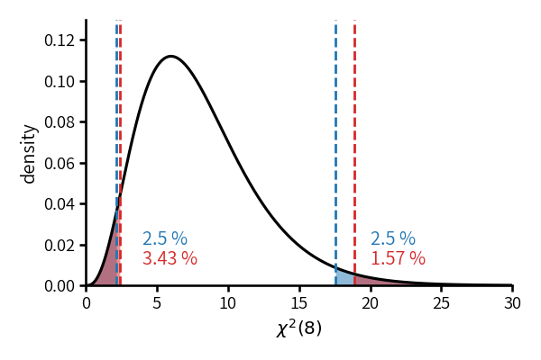

class: middle, center # 数理統計学特論II<br>第4回 正規分布と二項分布に<br>関する推測 奥 牧人 (和漢研) 2022/07/06 --- # 前回の復習 前回の目的 * 区間推定の意味と検定との対応関係を理解すること 前回の達成目標 * 信頼区間の意味を説明できる。 * 信頼区間や信頼域と検定の対応関係を説明できる。 * 信頼区間の解釈上の注意点を説明できる。 * 一様最強力不偏信頼域の意味を説明できる。 --- # 今回の位置付け --- # 今回の目的と達成目標 目的 * 代表的な推定と検定を最適性の観点から整理すること 達成目標 * 最適性が保証されている推定や検定を複数あげられる。 * 最適性が保証されていない推定や検定をあげられる。 * 通常使われるが最適ではない推定や検定をあげられる。 * 一元配置分散分析の意味を説明できる。 * 分割表の検定の意味を説明できる。 --- # 予習用キーワードの確認 * スチューデントの $t$ 検定 * ウェルチの $t$ 検定 * 対応のある $t$ 検定 --- # Outline 1. 正規分布に関する推測 2. 2項分布に関する推測 3. 多項分布に関する検定 --- # Outline 1. **正規分布に関する推測** 2. 2項分布に関する推測 3. 多項分布に関する検定 --- # 最適性の用語の略記 * 点推定 * 一様最小分散不偏推定量 (UMVU) * 最尤推定量 (MLE) * 区間推定 * 一様最強力不偏信頼域 (UMPU) * 検定 * 一応最強力検定 (UMP) * 一応最強力不偏検定 (UMPU) --- # 記号と条件設定 * 上側 $\alpha$ 点の記号 * 正規分布: $z_\alpha$ * 自由度 $n$ の $t$ 分布: $t_\alpha(n)$ * 自由度 $n$ の $\chi^2$ 分布: $\chi_\alpha^2(n)$ * 自由度 $(l,m)$ の $F$ 分布: $F_\alpha(l,m)$ * 確率密度関数で $x$ を明示したい場合 * 自由度 $n$ の $\chi^2$ 分布: $\tilde\chi_n^2(x)$ * 自由度 $(l,m)$ の $F$ 分布: $\tilde F_{l,m}(x)$ * 有意水準は $\alpha$, 信頼係数は $1-\alpha$ --- # 1標本問題の点推定 * $X_1,\ldots,X_n\stackrel{i.i.d.}{\sim}N(\mu,\sigma^2)$ とする。 * $\mu$ の点推定は UMVU かつ MLE <div style="margin: -5rem 0"></div> $$\bar X=\frac{1}{n}\sum_{i=1}^nX_i$$ * $\sigma^2$ の点推定で、$\mu$ が既知の場合は UMVU かつ MLE $$\frac{1}{n}\sum_{i=1}^n(X_i-\mu)^2$$ * $\sigma^2$ の点推定で $\mu$ が未知なら、$n-1$ 割が UMVU, $n$ 割が MLE <div>$$s^2=\frac{1}{n-1}\sum_{i=1}^n(X_i-\bar X)^2,\quad s_n^2=\frac{1}{n}\sum_{i=1}^n(X_i-\bar X)^2$$</div> --- # 1標本問題の点推定 * $\sigma$ の点推定の MLE <div>$$s_n=\sqrt{\frac{1}{n}\sum_{i=1}^n(X_i-\bar X)^2}$$</div> * $\sigma$ の点推定で、一般的に用いられるものは UMPU ではない <div>$$s=\sqrt{\frac{1}{n-1}\sum_{i=1}^n(X_i-\bar X)^2}$$</div> * $\sigma$ の点推定の UMPU $$s'=\frac{\sqrt{n-1}\,\Gamma((n-1)/2)}{\sqrt{2}\,\Gamma(n/2)}s$$ --- # 1標本問題の区間推定 * $\mu$ の区間推定で、$\sigma^2$ が既知の場合の UMPU $$\bar X\pm z_{\alpha/2}\frac{\sigma}{\sqrt{n}}$$ * $\mu$ の区間推定で、$\sigma^2$ が未知の場合の UMPU <div>$$\bar X\pm t_{\alpha/2}(n-1)\frac{s}{\sqrt{n}}$$</div> * $\sigma^2$ の区間推定で、$\mu$ が未知の場合、一般的に用いられるものは UMPU ではない <div>$$\frac{(n-1)s^2}{\chi^2_{\alpha/2}(n-1)}<\sigma^2<\frac{(n-1)s^2}{\chi^2_{1-\alpha/2}(n-1)}$$</div> --- # 1標本問題の区間推定、続き * $\sigma^2$ の区間推定で、$\mu$ が未知の場合の UMPU <div>$$\frac{(n-1)s^2}{\lambda_2}<\sigma^2<\frac{(n-1)s^2}{\lambda_1}$$</div> * ここで $\lambda_1$, $\lambda_2$ は以下を満たすように決める <div>$$\begin{align}\int_{\lambda_1}^{\lambda_2}\tilde\chi^2_{n-1}(x)dx&=1-\alpha\\ \lambda_1\tilde\chi^2_{n-1}(\lambda_1)&=\lambda_2\tilde\chi^2_{n-1}(\lambda_2)\end{align}$$</div> --- # 実際どのくらい違うのか * 青線が一般的に用いられるもの、赤線が不偏で最適な場合  --- # 2標本問題 * 2標本問題には、対応の無い場合と有る場合がある。 * 対応ありの場合、$(X_1,Y_1),\ldots,(X_n,Y_n)$ のようにペアになっている。 * 例、同じ $n$ 人の治療前と治療後の何かの測定値 * そうでない場合は対応なし * 例、薬を飲んだ $n$ 人と、偽薬を飲んだ別の $m$ 人の測定値 * 対応ありの場合は通常 $Z_i=Y_i-X_i$ として1標本問題に帰着させる。 * 以降では対応なしの2標本問題のみを考える。 --- # 2標本問題の点推定 * $X$ と $Y$ が独立、$X\sim N(\mu_1,\sigma_1^2)$, $Y\sim N(\mu_2,\sigma_2^2)$ とする。 * $\mu_2-\mu_1$ の点推定は UMVU かつ MLE $$\widehat{\mu_2-\mu_1}=\bar Y-\bar X$$ * $\sigma_2^2/\sigma_1^2$ の点推定で、$\mu_1$, $\mu_2$ が未知の場合の MLE <div>$$\widehat{\sigma_2^2/\sigma_1^2}=\frac{\sum_{i=1}^n(Y_i-\bar Y)^2/n}{\sum_{i=1}^m(X_i-\bar X)^2/m}$$</div> * $\sigma_2^2/\sigma_1^2$ の点推定で、$\mu_1$, $\mu_2$ が未知の場合の UMVU <div>$$\widehat{\sigma_2^2/\sigma_1^2}=\frac{\sum_{i=1}^n(Y_i-\bar Y)^2/(n-1)}{\sum_{i=1}^m(X_i-\bar X)^2/(m-3)}$$</div> --- # 2標本問題の区間推定 * $\mu_2-\mu_1$ の区間推定で、$\sigma_1^2$, $\sigma_2^2$ が既知の場合の UMPU <div>$$\bar Y-\bar X\pm z_{\alpha/2}\sqrt{\frac{\sigma_1^2}{m}+\frac{\sigma_2^2}{n}}$$</div> * 同上、$\sigma_1^2=\sigma_2^2=\sigma^2$ で $\sigma^2$ が未知の場合の UMPU <div>$$\bar Y-\bar X\pm t_{\alpha/2}(n+m-2)\sqrt{\frac{s_p^2}{m}+\frac{s_p^2}{n}}$$</div> ここで $s_p^2$ はプールされた分散 <div>$$s_p^2=\frac{\sum_{i=1}^m(X_i-\bar X)^2+\sum_{i=1}^n(Y_i-\bar Y)^2}{m+n-2}$$</div> --- # 2標本問題の区間推定、続き * 引き続き $\mu_2-\mu_1$ の区間推定で、$\sigma_1^2$, $\sigma_2^2$ が未知で、かつ、等しいと仮定できない場合、正確な信頼区間を求められない * ベーレンス・フィッシャー問題と呼ばれる * 近似的なウェルチの信頼区間が用いられる $$\bar Y-\bar X\pm t_{\alpha/2}(k)\sqrt{\frac{s_1^2}{m}+\frac{s_2^2}{n}}$$ * ここで $s_1^2$, $s_2^2$ は $X$, $Y$ それぞれの不偏分散 * 自由度 $k$ は以下の式により定められる。 $$\frac{(s_1^2/m+s_2^2/n)^2}{k}=\frac{s_1^4}{m^2(m-1)}+\frac{s_2^4}{n^2(n-1)}$$ --- # 2標本問題の区間推定、続き * $\sigma_2^2/\sigma_1^2$ の区間推定で、以下は UMPU ではない ($\mu_1$, $\mu_2$ は未知) <div>$$\frac{1}{F_{\alpha/2}(n-1,m-1)}\frac{s_2^2}{s_1^2}<\frac{\sigma_2^2}{\sigma_1^2}<\frac{1}{F_{1-\alpha/2}(n-1,m-1)}\frac{s_2^2}{s_1^2}$$</div> * UMPU は以下 <div>$$\frac{1}{\lambda_2}\frac{s_2^2}{s_1^2}<\frac{\sigma_2^2}{\sigma_1^2}<\frac{1}{\lambda_1}\frac{s_2^2}{s_1^2}$$</div> * ここで $\lambda_1$, $\lambda_2$ は以下を満たすように決める <div>$$\begin{align}\int_{\lambda_1}^{\lambda_2}\tilde F_{n-1,m-1}(x)dx&=1-\alpha\\ \lambda_1\tilde F_{n-1,m-1}(\lambda_1)&=\lambda_2\tilde F_{n-1,m-1}(\lambda_2)\end{align}$$</div> --- # 1標本問題の $\mu$ の検定 * 1標本に話を戻して $X_1,\ldots,X_n\stackrel{i.i.d.}{\sim}N(\mu,\sigma^2)$ とする。 * $\mu$ の片側検定 $P_1$ と両側検定 $P_2$ $$\begin{align}(P_1)\quad H_0:\mu\leq\mu_0\quad\mathrm{vs.}\quad H_1:\mu>\mu_0\\\\(P_2)\quad H_0:\mu=\mu_0\quad\mathrm{vs.}\quad H_1:\mu\neq\mu_0\end{align}$$ * $\sigma^2$ が既知の場合の片側検定 $P_1$ の UMP <div>$$Z=\frac{\sqrt{n}(\bar X-\mu_0)}{\sigma}>z_\alpha\quad\Rightarrow\quad\mathrm{reject}$$</div> * $\sigma^2$ が既知の場合の両側検定 $P_2$ の UMPU <div>$$|Z|>z_{\alpha/2}\quad\Rightarrow\quad\mathrm{reject}$$</div> --- # 1標本問題の $\mu$ の検定、続き * $\sigma^2$ が未知の場合の片側検定 $P_1$ の UMPU <div>$$t=\frac{\sqrt{n}(\bar X-\mu_0)}{s}>t_\alpha(n-1)\quad\Rightarrow\quad\mathrm{reject}$$</div> 片側なのに UMPU なのは $\sigma^2$ が局外母数のため * $\sigma^2$ が未知の場合の両側検定 $P_2$ の UMPU <div>$$|t|>t_{\alpha/2}(n-1)\quad\Rightarrow\quad\mathrm{reject}$$</div> --- # 1標本問題の $\sigma^2$ の検定 * $\\sigma^2$ の片側検定 $P_3$, $P_4$ と両側検定 $P_5$ $$\begin{align}(P_3)\quad H_0:\sigma^2\leq\sigma^2_0\quad\mathrm{vs.}\quad H_1:\sigma^2>\sigma^2_0\\\\(P_4)\quad H_0:\sigma^2\geq\sigma^2_0\quad\mathrm{vs.}\quad H_1:\sigma^2<\sigma^2_0\\\\(P_5)\quad H_0:\sigma^2=\sigma^2_0\quad\mathrm{vs.}\quad H_1:\sigma^2\neq\sigma^2_0\end{align}$$ * $\mu$ が既知の場合の片側検定 $P_3$ の UMP <div>$$\chi^2=\frac{\sum_{i=1}^n(X_i-\mu)^2}{\sigma_0^2}>\chi^2_\alpha(n)\quad\Rightarrow\quad\mathrm{reject}$$</div> * $\mu$ が既知の場合の片側検定 $P_4$ の UMP <div>$$\chi^2<\chi^2_{1-\alpha}(n)\quad\Rightarrow\quad\mathrm{reject}$$</div> --- # 1標本問題の $\sigma^2$ の検定、続き * $\mu$ が既知の場合の両側検定 $P_5$ で、以下は UMPU ではない <div>$$\chi^2>\chi^2_{\alpha/2}(n)\ \ \mathrm{or}\ \ \chi^2<\chi^2_{1-\alpha/2}(n)\quad\Rightarrow\quad\mathrm{reject}$$</div> * UMPU は以下 <div>$$\chi^2>\lambda_2\ \ \mathrm{or}\ \ \chi^2<\lambda_1\quad\Rightarrow\quad\mathrm{reject}$$</div> * ここで $\lambda_1$, $\lambda_2$ は以下を満たすように決める (自由度 $n$) <div>$$\begin{align}\int_{\lambda_1}^{\lambda_2}\tilde\chi^2_n(x)dx&=1-\alpha\\ \lambda_1\tilde\chi^2_n(\lambda_1)&=\lambda_2\tilde\chi^2_n(\lambda_2)\end{align}$$</div> --- # 1標本問題の $\sigma^2$ の検定、続き * $\mu$ が未知の場合は、$\mu$ を $\bar X$ で置き換え、自由度を $n$ から $n-1$ に置き換えれば良い。 * $\mu$ が未知の場合の片側検定 $P_3$ の UMPU かつ UMP <div>$$\chi^2=\frac{\sum_{i=1}^n(X_i-\bar X)^2}{\sigma_0^2}>\chi^2_\alpha(n-1)\quad\Rightarrow\quad\mathrm{reject}$$</div> * $\mu$ が未知の場合の片側検定 $P_4$ の UMPU <div>$$\chi^2<\chi^2_{1-\alpha}(n-1)\quad\Rightarrow\quad\mathrm{reject}$$</div> * $\mu$ が未知の場合の両側検定 $P_5$ は先ほどと同様 * $\alpha/2$ ずつ分けたものは UMPU ではなく、UMPU は別の形 --- # 2標本問題の差の検定 * $\mu_2-\mu_1$ に関する片側検定 $P_6$ と両側検定 $P_7$ $$\begin{align}(P_6)\quad H_0:\mu_2\leq\mu_1\quad\mathrm{vs.}\quad H_1:\mu_2>\mu_1\\\\(P_7)\quad H_0:\mu_1=\mu_2\quad\mathrm{vs.}\quad H_1:\mu_1\neq\mu_2\end{align}$$ * $\sigma_1^2$, $\sigma_2^2$ が既知の場合の片側検定 $P_6$ の UMP <div>$$Z=\frac{\bar Y-\bar X}{\sqrt{\sigma_1^2/m+\sigma_2^2/n}}>z_\alpha\quad\Rightarrow\quad\mathrm{reject}$$</div> * $\sigma_1^2$, $\sigma_2^2$ が既知の場合の両側検定 $P_7$ の UMPU <div>$$|Z|>z_{\alpha/2}\quad\Rightarrow\quad\mathrm{reject}$$</div> --- # 2標本問題の差の検定、続き * $\sigma_1^2=\sigma_2^2=\sigma^2$ で $\sigma^2$ が未知の場合の片側検定 $P_6$ の UMPU <div>$$t=\frac{\bar Y-\bar X}{\sqrt{s_p^2/m+s_p^2/n}}>t_\alpha(m+n-2)\quad\Rightarrow\quad\mathrm{reject}$$</div> ここで $s_p^2$ はプールされた分散 * 同上、両側検定 $P_7$ の UMPU <div>$$|t|>t_{\alpha/2}(m+n-2)\quad\Rightarrow\quad\mathrm{reject}$$</div> * 実用上、2標本の差の検定は良く使われる。 * 等分散を仮定する場合は **スチューデントの $t$ 検定** と呼ばれる。 --- # 2標本問題の差の検定、続き * $\sigma_1^2$, $\sigma_2^2$ が未知で、かつ、等しいと仮定できない場合、**ウェルチの $t$ 検定** が用いられる。 * 最適性は保証されない。 * 片側検定 $P_6$ の場合 <div>$$t=\frac{\bar Y-\bar X}{\sqrt{s_1^2/m+s_2^2/n}}>t_\alpha(k)\quad\Rightarrow\quad\mathrm{reject}$$</div> * $s_1^2$, $s_2^2$ は $X$, $Y$ それぞれの不偏分散、自由度 $k$ は前述 * 両側検定 $P_7$ の場合 <div>$$|t|>t_{\alpha/2}(k)\quad\Rightarrow\quad\mathrm{reject}$$</div> --- # 2標本問題の分散比の検定 * $\sigma_2^2/\sigma_1^2$ に関する片側検定 $P_8$ と両側検定 $P_9$ $$\begin{align}(P_8)\quad H_0:\sigma_2^2\leq\sigma_1^2\quad\mathrm{vs.}\quad H_1:\sigma_2^2>\sigma_1^2\\\\(P_p)\quad H_0:\sigma_1^2=\sigma_2^2\quad\mathrm{vs.}\quad H_1:\sigma_1^2\neq\sigma_2^2\end{align}$$ * $\mu_1$, $\mu_2$ が未知の場合の $P_8$ の UMPU <div>$$F=\frac{s_2^2}{s_1^2}>F_{\alpha}(n-1,m-1)\quad\Rightarrow\quad\mathrm{reject}$$</div> * 同上、両側検定 $P_9$ で $\alpha/2$ ずつ分けたものは UMPU でない * 区間推定について前述した方法を使えば UMPU * この場合の UMPU はバートレットの検定とも等価 --- # 等分散検定について補足 * 2標本の差の検定では、等分散を仮定できる場合にスチューデントの $t$ 検定、できない場合にウェルチの $t$ 検定を使う。 * 以下は個人的な意見である。 * 等分散の仮定が成り立つかどうかを等分散検定で判断すべきでないと思う。 * 通常の有意水準 $5$ %で有意でないことは、等分散であることを積極的に支持するものではない。 * $F$ 分布を用いた等分散検定は正規分布からの逸脱に弱く、<br>実用的とは考えにくい。 * どちらか分からない場合は、等分散検定せずにウェルチの $t$ 検定を使えば良いと思う。 --- # 一元配置分散分析 * 対応のない $k$ 標本 <div>$$X_{ij}\sim N(\mu_i,\sigma^2),\quad i=1,\ldots,k,\quad j=1,\ldots,n_i$$</div> * $\sigma^2$ は共通と仮定 * $n_i$ は $i$ 番目の標本のサイズ、総数 $n=n_1+\cdots+n_k$ * 検定問題 $$H_0:\mu_1=\cdots=\mu_k\quad\mathrm{vs.}\quad H_1:\mu_i\neq\mu_j,\ \ \exists\mu_i,\mu_j$$ * 全平均と群毎の平均 <div>$$\bar{\bar X}=\frac{1}{n}\sum_{i=1}^k\sum_{j=1}^{n_i}X_{ij},\quad\bar X_i=\frac{1}{n_i}\sum_{j=1}^{n_i}X_{ij}$$</div> --- # 一元配置分散分析、続き * 郡間平方和 <div>$$W_H=\sum_{i=1}^k (\bar X_i-\bar{\bar X})^2$$</div> * 郡内平方和 <div>$$W_E=\sum_{i=1}^k\sum_{j=1}^{n_i} (X_{ij}-\bar X_i)^2$$</div> * 全平方和 ($W_T=W_H+W_E$ を満たす) <div>$$W_T=\sum_{i=1}^k\sum_{j=1}^{n_i}(X_{ij}-\bar{\bar X})^2$$</div> --- # 一元配置分散分析、続き * 帰無仮説のもとで $W_H$ と $W_E$ は互いに独立で $$\frac{W_H}{\sigma^2}\sim\chi^2(k-1),\quad\frac{W_E}{\sigma^2}\sim\chi^2(n-k)$$ となるので、検定は <div>$$F=\frac{W_H/(k-1)}{W_E/(n-k)}>F_\alpha(k-1,n-k)\quad\Rightarrow\quad\mathrm{reject}$$</div> * 尤度比検定とも等価 --- # Outline 1. 正規分布に関する推測 2. **2項分布に関する推測** 3. 多項分布に関する検定 --- # 2項分布の点推定と検定 * $X\sim \mathrm{Bin}(n,p)$ とする。 * $p$ の点推定は UMVU かつ MLE $$\hat p=\frac{X}{n}$$ * $p$ の両側検定 (片側も同様) $$H_0:p=p_0\quad\mathrm{vs.}\quad H_1:p\neq p_0$$ は、$n$ が大きいときの近似 $X\stackrel{\cdot}{\sim}N(np,np(1-p))$ を用いて <div>$$\left|\frac{\sqrt{n}(\hat p-p_0)}{\sqrt{p_0(1-p_0)}}\right|>z_{\alpha/2}\quad\Rightarrow\quad\mathrm{reject}$$</div> --- # 2項分布の区間推定 * 近似的な検定との対応を考えるなら、区間推定は以下になる <div>$$\frac{2n\hat p+z_{\alpha/2}^2\pm\sqrt{4z_{\alpha/2}^2n\hat p(1-\hat p)+z_{\alpha/2}^4}}{2(n+z_{\alpha/2}^2)}$$</div> * しかし、通常は $\hat p\stackrel{\cdot}{\sim}N(p,p(1-p)/n)$ で $p$ を $\hat p$ に変えた $$\hat p\pm z_{\alpha/2}\sqrt{\frac{\hat p(1-\hat p)}{n}}$$ が用いられる。 --- # Outline 1. 正規分布に関する推測 2. 2項分布に関する推測 3. **多項分布に関する検定** --- # 分割表の検定 * $r\times c$ 分割表 <table class="table text-center mt-4 mb-5" style="width:60%"> <tr><th></th><th>C1</th><th>C2</th><th>C2</th></tr> <tr><th>R1</th><td>$X_{11}$</td><td>$X_{12}$</td><td>$X_{13}$</td></tr> <tr><th>R2</th><td>$X_{21}$</td><td>$X_{22}$</td><td>$X_{23}$</td></tr> </table> * 多項分布とみなす ($n$ は総数) <div>$$p(x_{11},\dots,x_{rc})=\frac{n!}{x_{11}!\cdots x_{rc}!}p_{11}^{x_{11}}\cdots p_{rc}^{x_{rc}}$$</div> * $\sum p_{ij}=1$ のため、自由度は $rc-1$ --- # 分割表の検定、続き * 行と列が独立であることを帰無仮説とする <div>$$H_0:p_{ij}=p_{i\bullet}p_{\bullet j},\quad\forall i,j$$</div> * $p_{i\bullet}$ は $i$ 行の周辺確率 * $p_{\bullet j}$ は $j$ 列の周辺確率 * $H_0$ の自由度は $r+c-2$ * 自由度の差は $rc-1-(r+c-2)=(r-1)(c-1)$ * $H_0$ に基づく期待度数 <div>$$\hat X_{ij}=n\hat p_{ij}=n\hat p_{i\bullet}\hat p_{\bullet j}=\frac{1}{n}\sum_{j'=1}^cX_{ij'}\sum_{i'=1}^rX_{i'j}$$</div> --- # 分割表の検定、続き * $n$ が十分大きいとき、以下の検定が用いられる <div>$$\chi^2=\sum_{i,j}\frac{(X_{ij}-\hat X_{ij})^2}{\hat X_{ij}}>\chi^2_\alpha((r-1)(c-1))\quad\Rightarrow\quad\mathrm{reject}$$</div> * 観測度数 (observed count) と期待度数 (expected count) の<br>頭文字を使って次のように書くことがある。 $$\sum\frac{(\mathrm{O}-\mathrm{E})^2}{\mathrm{E}}$$ --- # まとめ 代表的な推定と検定を最適性の観点から整理しました。 1. 正規分布に関する推測 <span class="times">!</span> 最適性が保証されている推定や検定を複数あげられる? <span class="times">!</span> 最適性が保証されていない推定や検定をあげられる? <span class="times">!</span> 通常使われるが最適ではない推定や検定をあげられる? <span class="times">!</span> 一元配置分散分析の意味を説明できる? 2. 2項分布に関する推測 3. 多項分布に関する検定 <span class="times">!</span> 分割表の検定の意味を説明できる? --- # 小テスト * Moodleで小テストに回答して下さい。 * **期限は今週中** (日曜の23:59まで) とします。 * 繰り返し受験して構いません。最高得点で成績をつけます。 --- # 次回の予習用キーワード * 線形部分空間 * 直交行列 * 基底